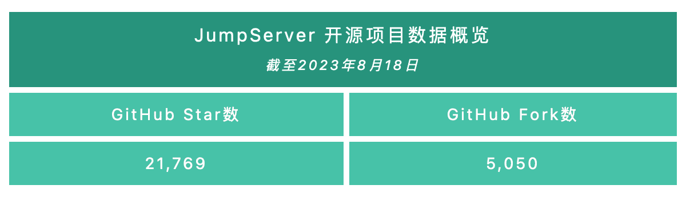
2023年8月21日，JumpServer开源堡垒机正式发布v3.6.0版本。在这一版本中，用户管理层面，JumpServer支持用户批量连接资产，通过Web GUI方式连接的数据库支持对表名和列名进行自动补全，Web Terminal页面的会话Tab窗口支持手动拖拽位置。作业中心方面，支持对MySQL、PostgreSQL、SQL Server数据库进行批量操作，大幅提高了用户的工作效率。管理员层面，该版本支持管理员对在线会话执行暂停和恢复操作，支持配置会话的最大在线时长，并且支持将长时间未登录的用户重置为“未激活”状态。另外，在远程应用方面，JumpServer支持单个远程应用一键批量部署到多台发布机，增强了管理员对堡垒机上资产的控制能力。
X-Pack增强包方面，新版JumpServer的“云同步”模块强化了同步策略，支持以更灵活的配置方式来满足广大用户不同的同步场景。同时，JumpServer也加强了账号备份的安全机制，备份内容支持拆分分段发送给不同的用户，以提高系统安全性。
另外，新版本JumpServer支持对接第三方密钥存储系统，这样一来，堡垒机上的账号密钥信息可以同步至第三方密钥存储系统中。
新增功能
1. 支持批量连接资产（Web Terminal页面）
在JumpServer v3.6.0版本中，JumpServer支持用户批量连接资产，用户可以通过“多选”功能一键连接多个指定资产。
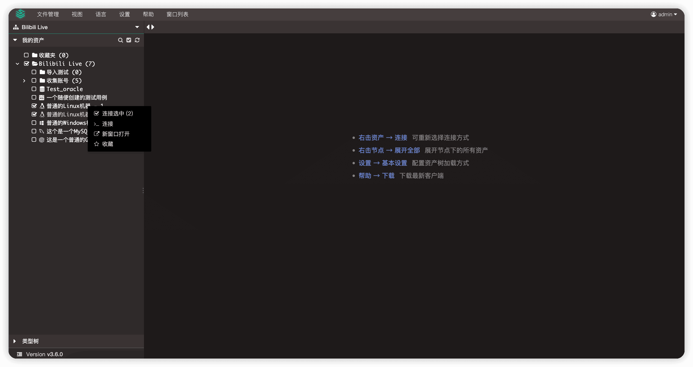
▲ 图1 支持批量连接资产（Web Terminal页面）2. 对于使用Web GUI方式连接的数据库，支持对表名和列名进行自动补全
在JumpServer v3.6.0版本中，使用Web GUI方式连接数据库后，在查询有关于表和列的操作时，会有相应的字段提醒功能。
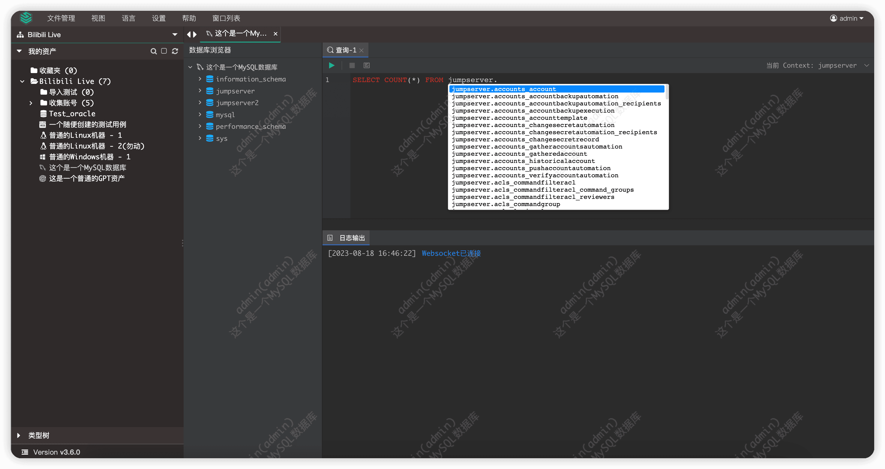
▲ 图2 对于使用Web GUI方式连接的数据库，支持对表名和列名进行自动补全3. 在线会话支持管理员执行会话暂停和恢复操作
JumpServer v3.6.0版本中，选择“审计台“→ “会话审计”→ “会话记录”，管理员可以对当前在线的会话执行“暂停”和“恢复”操作，被“暂停”的会话将无法操作，直到被管理员选择“恢复”选项进行恢复。
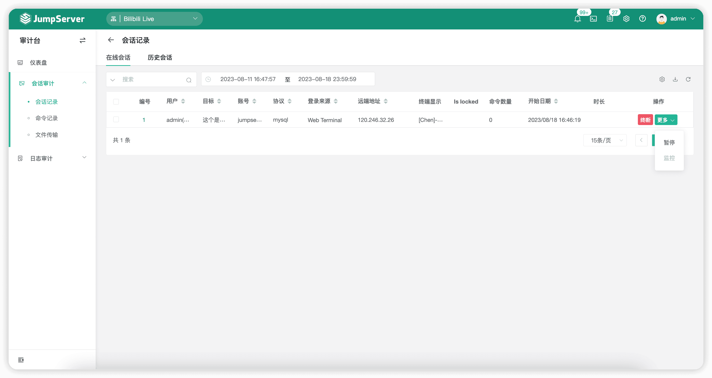
▲ 图3 在线会话支持管理员执行会话暂停和恢复操作4. 对于Web Terminal页面的会话Tab窗口，支持手动拖拽位置
在JumpServer v3.6.0版本中，用户在使用Web Terminal方式连接资产时，可以对相应的Tab窗口进行手动拖拽，重新排列位置。
5. 新增虚拟账号列表，支持查看同名账号、手动输入、匿名账号的相关描述信息，支持设置同名账号的密码使用策略
在JumpServer v3.6.0版本中，如果授权的是同名账号，AD/LDAP用户支持使用其账号密码登录资产，密码优先级为：纳管密码>用户登录密码>手动代填。
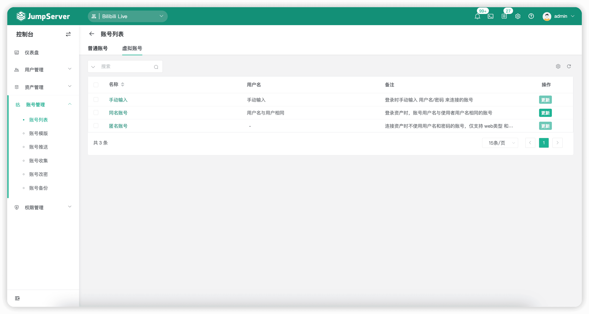
▲ 图4 虚拟账号列表支持查看同名账号、手动输入、匿名账号的相关描述信息6. 支持配置会话最大连接时长，超过最大时长时系统自动强制断开会话
在JumpServer v3.6.0版本中，支持在“系统设置”页面对会话的最大连接时长进行配置，当会话到达最大连接时长配置项的值后，会话会被强制断开。
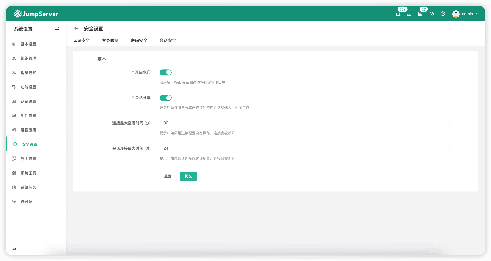
▲ 图5 支持配置会话的最大连接时长7. 会话分享支持发送消息通知至被分享者
在JumpServer v3.6.0版本中，当一个会话被分享到指定人时，被指定人的站内信将会收到一条分享会话的消息通知。
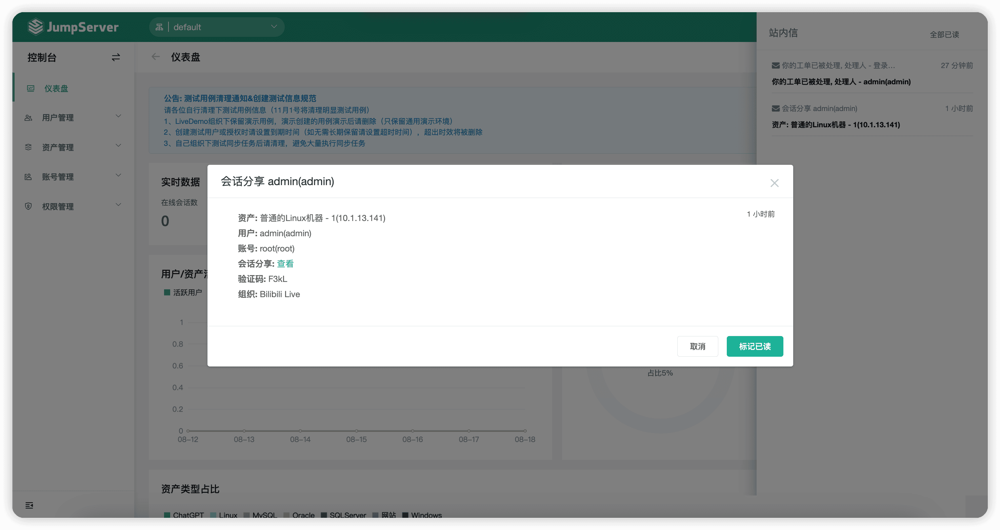
▲ 图6 会话分享支持发送消息通知到被分享者8. 系统工具新增Nmap和TCPDUMP工具
在JumpServer v3.6.0版本中，选择“系统设置”→“系统工具”，新增Nmap（端口扫描）和TCPDUMP（网络数据采集分析）工具，管理员可以在Web页面上进行简单的工具操作，便于排查堡垒机相关问题。
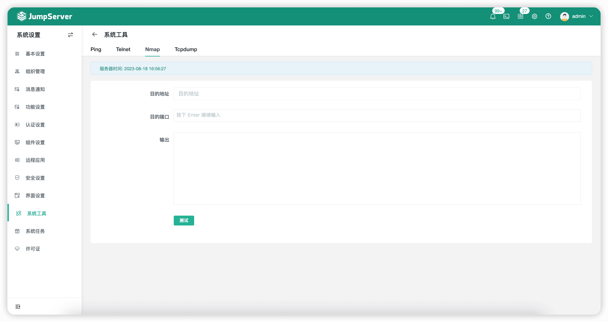
▲ 图7 系统工具新增Nmap和TCPDUMP工具9. 支持自动禁用长时间未登录的用户
JumpServer v3.6.0版本新增了一个定时任务，主要的作用是将长时间未登录的用户更改为失效状态，默认时间为30天。
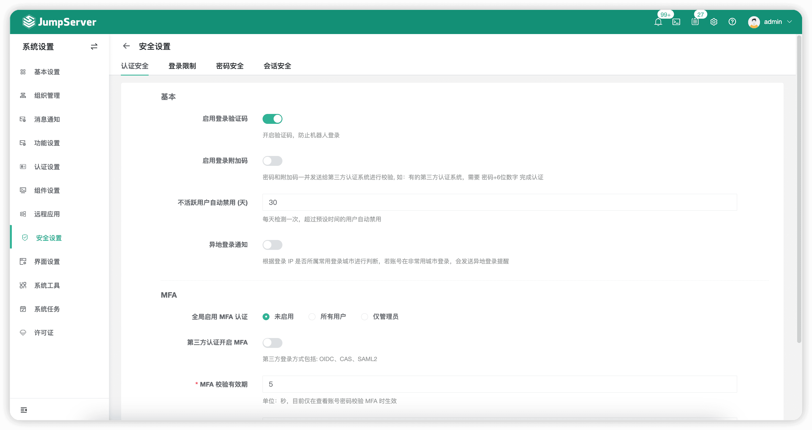
▲ 图8 支持自动禁用长时间未登录的用户10. 作业中心支持对MySQL、PostgreSQL、SQL Server数据库进行批量命令操作
在JumpServer v3.6.0版本中，“作业中心”新增了执行的命令种类，可以对MySQL、PostgreSQL、SQL Server数据库进行批量命令操作，快速对多副本资产进行重复命令操作。
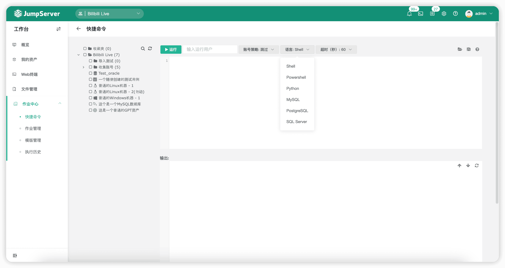
▲ 图9 作业中心支持对多种数据库进行批量命令操作11. 对于Web Terminal页面，连接资产时支持Guide模式（即显示资产连接密钥字符串）
在JumpServer v3.6.0版本中，用户在连接资产后可选择“Guide模式”。此模式将会展示详细的操作命令提示，便于用户复制执行。
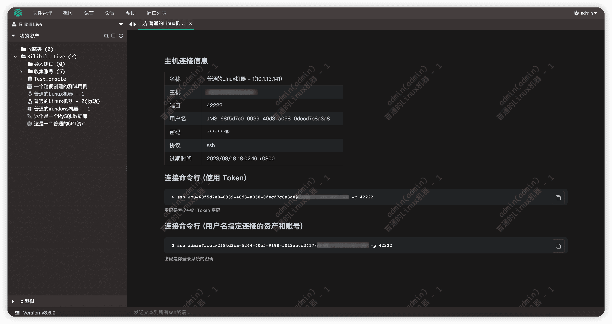
▲ 图10 Web Terminal页面连接资产支持Guide模式12. 单个远程应用支持一键批量部署到多台应用发布机
在JumpServer v3.6.0版本中，支持将单个远程应用批量推送至纳管的远程发布机上。
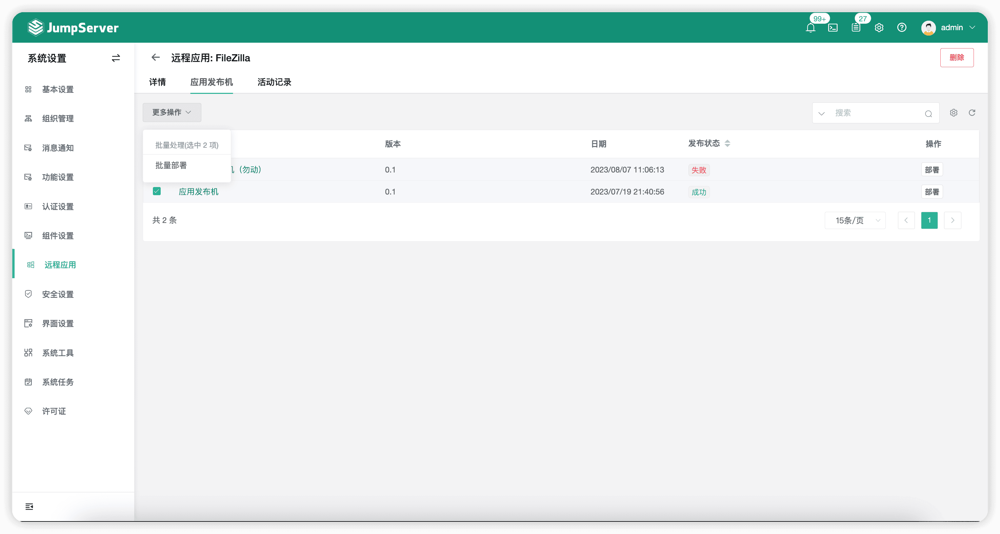
▲ 图11 支持将单个远程应用批量部署到多台应用发布机13. 重构JumpServer Client，支持可视化配置和拉起原生客户端工具（升级版本后需要重新安装新版Client客户端）
JumpServer v3.6.0版本重构了JumpServer Client。从该版本之后，JumpServer Client就拥有了自己的显示界面，通过本地命令行启动配置项，支持可视化配置和拉起原生客户端工具（升级版本后需要重新安装新版Client客户端），未来在使用体验上将会变得更加灵活。
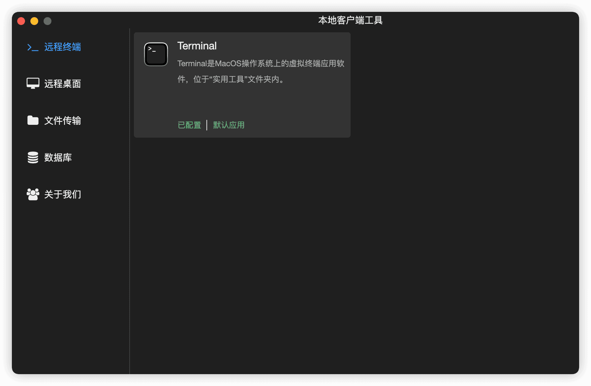
▲ 图12 JumpServer Client支持可视化配置和拉起原生客户端工具14. “云同步”模块支持配置多种同步策略（X-Pack增强包内）
在JumpServer v3.6.0版本中，“云同步”模块抛弃了之前固定的属性设置策略，采取了用户可配置的组合同步策略。
根据策略中的属性匹配，“云同步”可以灵活地将账号、平台、协议、网域网关和节点等信息设置到同步的实例上。
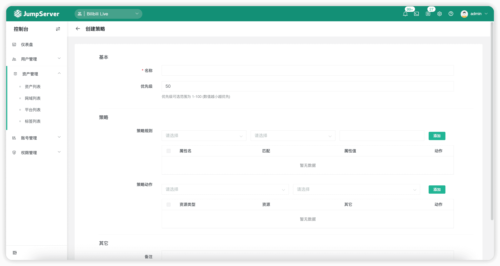
▲ 图13 云同步支持配置多种同步策略（X-Pack增强包内）15. 应用发布机支持通过网域网关进行连接（X-Pack增强包内）
在JumpServer v3.6.0版本中，远程应用发布机支持配置网域网关连接，实现“跳板机”的功能。
16. 账号备份支持将密钥分段发送给不同的接收人（X-Pack增强包内）
在JumpServer v3.6.0版本中，账号备份的安全模式再次升级，支持将密钥敏感信息通过邮件的方式拆分发送给不同的接收人。
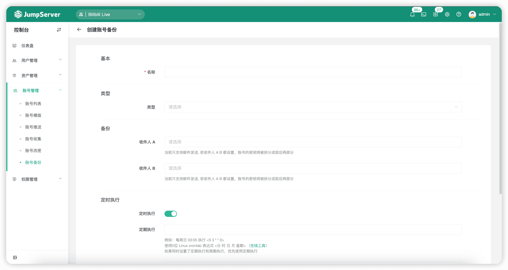
▲ 图14 账号备份支持将密钥分段发送给不同的接收人（X-Pack增强包内）17. 对于Oracle数据库，支持通过Web GUI方式使用SYSDBA角色进行连接（X-Pack增强包内）
在JumpServer v3.6.0版本中，用户可以在“系统平台”→“Oracle”协议中，点击齿轮按钮设置此平台协议下的Oracle数据库在连接时使用“SYSDBA”角色进行连接。
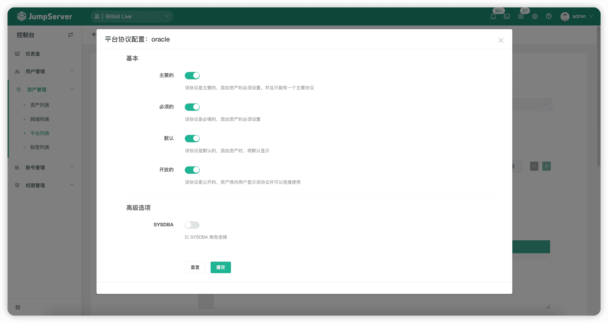
▲ 图15 对于Oracle数据库支持通过Web GUI方式使用SYSDBA角色连接（X-Pack增强包内）18. 账号密钥支持使用HashiCorp Vault第三方密钥存储系统（X-Pack增强包内）
在JumpServer v3.6.0版本中，账号密钥支持第三方密钥存储系统。用户需要在“config.txt”配置文件中修改参数“VAULT_ENABLED”为“true”，然后回到页面进行配置即可。
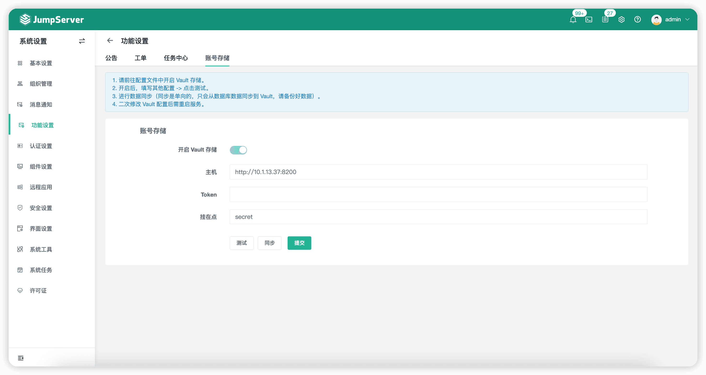
▲ 图16 账号密钥支持使用HashiCorp Vault第三方密钥存储系统（X-Pack增强包内）19. 资产登录复核工单功能支持审批人对当前会话执行暂停和恢复动作（X-Pack增强包内）
在JumpServer v3.6.0版本中，对于“登录复核”连接成功的资产所生成的会话，工单审批者可以在“工单详情”页面的右下角处对该连接会话进行控制（包括暂停、恢复、终断和监控操作）。
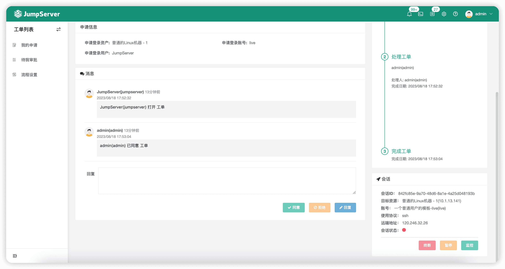
▲ 图17 资产登录复核工单支持审批人对当前会话执行暂停和恢复动作（X-Pack增强包内）功能优化
■ 优化飞书信息的消息通知文案 ，感谢 @BoringCat（https://github.com/BoringCat）的贡献；
■ 重构Kael组件，提高响应速度（使用Go语言）；
■ 优化组件监控页面；
■ 优化远程应用页面，增加应用市场链接；
■ 优化工作台的“最近会话”列表，支持一键连接资产；
■ 优化资产协议，支持对SSH和SFTP进行单独配置；
■ 优化应用发布机的创建，支持控制账号的数量和是否自动创建；
■ 创建用户时，默认添加到“Default”组织的“Default”用户组；
■ 使用“RDP文件”方式连接到Windows资产时，支持多屏显示控制选项；
■ 优化组件的操作行为不记录到操作日志列表的问题；
■ 连接Kubernetes资产时，支持通过网域网关进行连接；
■ 优化Telnet资产平台，支持自定义Prompt的提示信息；
■ 优化资产测试可连接和账号改密功能，支持“sudo”和“su”切换用户（针对Paramiko方式）；
■ Web资产平台支持开启和关闭安全模式，用于控制连接Web资产后，是否允许打开新的窗口和访问不同域的地址；
■ 优化Web Terminal页面左侧用户授权资产树的右击操作，支持展开/折叠其子节点和节点下的所有资产；
■ 优化文件管理功能，上传文件时，如果存在同名文件，则使用新名称进行保存；
■ 优化“资产详情”页面，通过账号模版添加账号时，支持搜索指定模版；
■ 优化固定Video-Worker组件的CPU使用数量为2，解决录像转码过程中资源占用较高的问题；
■ 移除通过Web CLI方式连接MySQL、PostgreSQL、SQLServer、MariaDB等数据库功能，建议通过Web GUI方式进行连接；
■ 优化应用连接的发布机账号选择策略，主机和应用都支持并发时，使用私有账号（jms_account）进行连接；不支持并发时，优先使用私有账号，其次使用公共账号（js_account）进行连接；
■ 优化工单管理功能，支持批量审批功能（X-Pack增强包内）；
■ 优化SYSTEM组织不允许被删除（X-Pack增强包内）；
■ 优化账号改密的密码校验逻辑，解决改密成功后可能导致未保存密码的问题（X-Pack增强包内）；
■ 组织角色中增加连接令牌的权限设置，并关联到工作台权限位（X-Pack增强包内）。
Bug修复
■ 修复批量更新资产时出现报错的问题；
■ 修复使用同名账号登录Web资产时，用户名代填失败的问题；
■ 修复由于资产的名称太长，导致资产连接失败的问题；
■ 修复“MAX_LIMIT_PER_PAGE”配置项的默认值和数据类型转换失败的问题；
■ 修复用户“SSH Public Key”的校验逻辑，解决用户个人信息页面上传公钥失败的问题；
■ 修复“忘记密码”页面发送短信时，手机号包含“+”字符显示用户未找到的问题；
■ 修复应用发布机创建同名账号时，包含组件名称用户的问题；
■ 修复连接资产时，删除上次连接的资产协议（例如：VNC），导致连接报错的问题；
■ 移除Nginx缓存配置，解决多台发布机之间获取账号列表不准确的问题；
■ 修复“系统设置” → “消息订阅” →“修改订阅人”中，用户名显示存在的XSS漏洞问题；
■ 修复账号列表添加账号时，会明文显示的问题；
■ 修复资产列表导出筛选的资源不生效的问题；
■ 修复“标签列表”页面中，点击“资产数量”会跳转到空白页面的问题；
■ 修复通过Web GUI方式连接Windows资产时，窗口比例不正确的问题；
■ 修复连接SUSE操作系统资产失败的问题（KoKo）；
■ 修复Web Terminal页面登录资产时，“记住密码”选项未勾选依然生效的问题；
■ 修复通过XRDP组件使用远程客户端连接Windows资产时，复制/粘贴、上传/下载权限控制不生效的问题（X-Pack增强包内）。